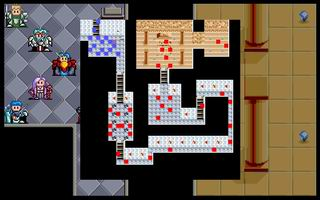

第十九章 禁地

 雷特
雷特 米兰
米兰 克隆
克隆 艾利欧
艾利欧 巴拉多
巴拉多 洛加
洛加 希瓦那
希瓦那 卡里斯
卡里斯 莱特
莱特 凯亚
凯亚 莉娜
莉娜 索尼克
索尼克 红武圣
红武圣 蓝武圣
蓝武圣 黑武圣
黑武圣
本关敌人：
 LV20 达克妮丝 （HP5000,AP500,DP200,HIT160,EV60,MV6,灭魂碎,爆龙炎）
LV20 达克妮丝 （HP5000,AP500,DP200,HIT160,EV60,MV6,灭魂碎,爆龙炎）
 LV15 大恶魔x8 （HP640,AP290,DP170,HIT125,EV45,MV5,烈击弹）
LV15 大恶魔x8 （HP640,AP290,DP170,HIT125,EV45,MV5,烈击弹）
 LV12 恶魔x10 （HP400,AP248,DP86,HIT104,EV24,MV5,火流星）
LV12 恶魔x10 （HP400,AP248,DP86,HIT104,EV24,MV5,火流星）
 LV12 ��尸兵x3 （HP960,AP310,DP205,HIT124,EV4,MV2）
LV12 ��尸兵x3 （HP960,AP310,DP205,HIT124,EV4,MV2）
LV15 恶魔神官x8 （HP640,AP290,DP242,HIT140,EV75,MV3,轰雷落,再生术）
胜利条件：敌人全灭
失败条件：雷特死亡
战后报酬：
$30000G/$65535G
攻略简要：
由于敌人几乎都不会主动出击，只需按部就班，逐步往前推进即可。若要快一点，便让红武圣和巴拉多合力开道，几乎可以一路畅通。
战后商店道具:
武器： |
防具： |
道具： |
剧情对话：
达克妮丝:哼!就是这个东西作怪,难怪我们伟大的大邪神一直无法复活...不过也就到此为止了,我魔族再度君临世界的时代即将来临!爆炎...
蓝武圣:住手!
达克妮丝:哼!烦人的家伙又出现了!
雷特:啊!这里就是皇宫禁地?这里还有个告示:『擅入者死!』我父王怎么会这么做?
克隆:我在王宫担任侍卫这么多年,也是第一次来到此地..因为这个告示据说是历任的国王所流传下来的,除了国王之外,任何人都不能来到此地,否则一律处死...
蓝武圣:嗯...我们为了防止魔族来此破坏,便告诉雷特他们的祖先,此乃极端神圣之地,若遭王族之外入侵,国家必有灾难,所以得设下禁令,以防止闲人任意进入.由于他已经视我们为守护神,所以也就言听计从了.
达克妮丝:...哼!你们到底��嗦完了没有?凡是阻扰我的人,一律杀无赦!黑暗的战士啊!我召唤你们来到这世上,将我的敌人全部清除吧!
巴拉多:啊!从地底出现了一些人影...
索尼克:这是黑暗的召唤咒,会呼唤出已死的战士来攻击我们!大家小心点!
干掉了达克妮丝。
达克妮丝:你们这些冷酷无情的家伙,真的想将我们一族赶尽杀绝吗...
雷特:哼!要不是你们魔族一直侵扰人类,有妄想让大邪神复活来毁灭世界,怎么会落到现在的下场?
达克妮丝:我们侵袭人类?哈哈哈...我们一族在你们人类尚未出现之前,自古就栖息在这个岛上,是你们人类侵入我们的地方,而且还一直以开拓的方式来侵占我们的生存空间.到底谁才是侵袭者呢?
雷特:这...
达克妮丝:我们一族当然无法这样一直容忍下去,便偶尔派人去警告你们,是希望你们人类能好自为之，没想到你们人类不仅不知悔改,还听信了那三个家伙的谗言,组织了武装军队,对我们展开一连串的攻击,使得原本人数就不多的我族,剩下的日渐稀少.所以我才想要唤醒大邪神好揭阻你们的侵略暴行...
黑武圣:够了!你们魔族原本就残虐成性,要不是当初我们十二人舍命力战,封住大邪神的话,只怕这个世界早就变成一片死寂了.你如今还想蛊惑雷特吗?
达克妮丝:哼...雷特,这三个老家伙,只不过是在利用你们罢了...他们自己和我们一族有仇,却捏造了一些古老的传说再扭曲了某些事实，他们的目的只不过是要利用你们,来对付我们一族罢了...
红武圣:一派胡言!等我把你斩成两半,看你还能如何妖言惑众!
达克妮丝:哼!你们也没有这个机会了...黑暗的破坏神啊!听从我的最后请求,将宿于我身上的黑暗之力完全解放...
蓝武圣:不好!她想要自爆!大家赶快离开这里!
米兰:好可怕的爆炸威力!若没有及时走避的话,一定会被炸得粉身碎骨!
红武圣:糟了!由达克妮丝自爆的威力看来,力场装置大概是不保了...
艾利欧:可恶!难道我们就这样功亏一篑吗?
蓝武圣:...唯今之计,就只有赶到封印大邪神的地方,趁着他的力量还没有完全回复之际,将其再度击败,便有希望再度封印...
黑武圣:...真的要再用那种方法来封印大邪神?
蓝武圣:唉!看来我们也没有其它选择了...
红武圣:雷特!刚刚达克妮丝的话,是否让你的信心产生动摇了?者也难怪,毕竟你的年纪尚轻,还不大能分辨各种挑拨离间的险恶手段...罢了!到时候你可以睁大眼睛看看我们的行为,是不是在利用你..
雷特:我...
蓝武圣:算了,这也是在所难免的,你也别太苛求他了...现在我们得用传送术,在最短的时间之内赶过去才行.
艾利欧:既然有这种传送术,为什么当初我们在神秘之塔时不使用,以便在达克妮丝到这里之前先过来呢?
蓝武圣:这是由于我们在王宫四周已经暗中布置了反传送的护障,以避免魔族用传送术侵入王宫，没想到在此刻反而会妨碍到我们.唉!世事难料...
红武圣:好啦!赶快走吧!这次绝不能让大邪神再次复活,否则一场空前的浩劫就在所难免了!
雷特:等等!我感到里面好象有股很熟悉的感觉...
黑武圣:什么...啊!这...这是...
红武圣:...炎龙剑!为什么原本在大战中失落的炎龙剑,会出现在毁坏的力场装置中?
蓝武圣:难道...难道达克妮丝的本体,就是炎龙剑?
雷特:这...这是怎么回事?
蓝武圣:这是一个很难解释的情形...我推测,也许炎龙剑在被魔族夺走之后,长期受到魔族内的邪恶之气所感染,而化成了达克妮丝...
艾利欧:这...这未免太夸张了吧?
蓝武圣:...已化成达克妮丝的炎龙剑,自认为是魔族,便利用她本身所拥有的强大力量收服了其余魔族,转而来和我们作对.如今她自爆之后,散尽了所有的黑暗邪恶之气,所以变回了原形...
雷特:那...那我为什么会有一股很熟悉的感觉?
黑武圣:...因为它和你们一族的由来,有一段很深的渊源...
雷特:是什么情形呢?
蓝武圣:雷特,你先拾起剑吧!我们要施展传送术,去阻止大邪神的复活.至于这段渊源,我们以后再来讨论吧!
第十九章完